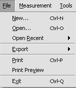
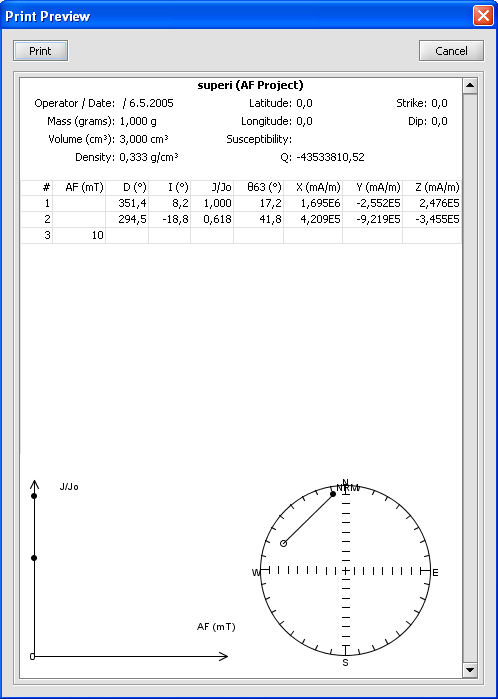

You can print currently open project. You can push CTRL + P or select from menu Print Preview or Print (see picture 1).
Print option will print your current sequence of project and all graphs. You can change what columns are printed from Measurement Sequence but if you select many columns they might not be printed correctly as they dont fit on A4-paper. It is preferred to use Print Preview to see how your selected columns are printed.
Here you can see how your project is printed. If it seems that columns dont fit on paper, change columns from Measurement Sequence.
